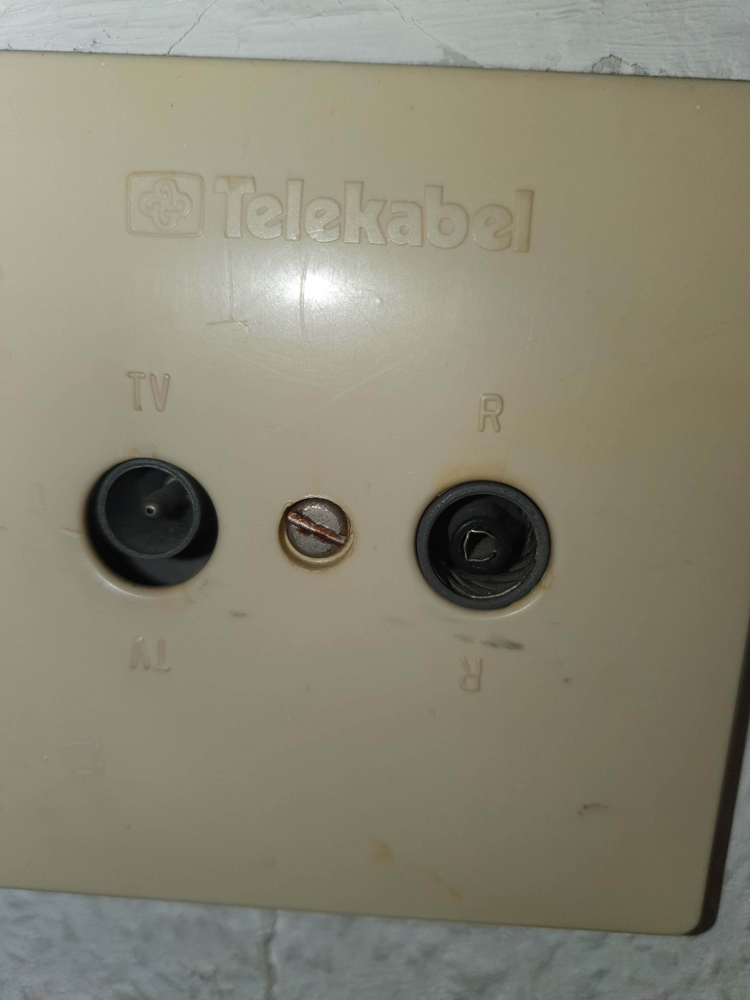

Hallo!
Ich bin seit längerem höchst unglücklich und auf der Suche nach einem gescheiten Internet Tarif, mit stabiler Leistung. Derzeit wird LTE genutzt, Problem eindeutig die überlasteten Zellen, was durch Corona noch schlimmer als sonst ist. Egal darum solls nicht gehen. Der Grund warum ich schwer von LTE wegkomme, bei uns gibts keine gescheiten Leitungen (Haus ist viel zu alt dafür und es wurde nix erneuert), bei allen Abfragen kamen nur grauenhafte Werte raus. Deswegen war ich verwundert, dass Magenta alles bei meiner Adresse anbietet, bis ich gesehen habe, dass sie nicht an der üblichen Telefondose sondern an COAX anschließen. So da ich allerdings dazu noch nix genaues weiß, würde ich gerne nochmal fragen:
1. Ist das die richtige? (Bild)
2. Wenn die passt, die muss ja steinalt sein, ist dann trotzdem ein Tarif von 100-300 down möglich? Wie gesagt ist für mich gerade einfach schwer vorstellbar
3. Was sind mögliche Nachteile, oder ist das einfach in allen Belangen besser als LTE? (Preis ist da jetzt mal wurscht, ich will einfach endlich im Jahr 2020 ein funktionierendes Netz haben)

vor 14 Minuten schrieb R3NNUR:
1. Ist das die richtige? (Bild)
2. Wenn die passt, die muss ja steinalt sein, ist dann trotzdem ein Tarif von 100-300 down möglich? Wie gesagt ist für mich gerade einfach schwer vorstellbar
Ja, das ist eine Anschlussdose für einen Zugang über COAX,also für Internet und TV von Magenta ehemalig UPC. Eine Anbindung über Kabel bzw. DSL ist immer zu bevorzugen da wie du schon erwähnt hast, LTE keine stabile Anbindung erlaubt.
Check mal deine Leitung
https://www.magenta.at/verfuegbarkeit/
vor 7 Minuten schrieb Rexalius2000:
Ja, das ist eine Anschlussdose für einen Zugang über COAX,also für Internet und TV von Magenta ehemalig UPC. Eine Anbindung über Kabel bzw. DSL ist immer zu bevorzugen da wie du schon erwähnt hast, LTE keine stabile Anbindung erlaubt.
Check mal deine Leitung
https://www.magenta.at/verfuegbarkeit/
Ja bei mir ist alles bis Gigakraft 1000 möglich ( auch alle der "Gaming" Tarife)
Diese Dose müsste also auch nicht erneuert werden? Einfach anschließen und es muss wohl freigeschaltet werden und dann funktionierts?
Danke schonmal für die Antwort
")
vor 3 Minuten schrieb R3NNUR:
Diese Dose müsste also auch nicht erneuert werden? Einfach anschließen und es muss wohl freigeschaltet werden und dann funktionierts?
Danke schonmal für die Antwort
Normalerweise muss sie nicht erneuert werden, wenn sie einwandfrei funktioniert außer sie ist defekt dann wird sie kostenlos von Magenta natürlich getauscht. Du bestellst das gewünschte Produkt und dann erhältst du einen Router/Modem für den Zugang. Es kann auch sein das Magenta zu dir kommen muss aber das erfährst du dann alles nachdem die Bestellung eingegangen ist. Wenn du noch fragen hast ist die Magenta Community gerne für dich da
")
Internet Produkte:
https://www.magenta.at/internet/internet-zuhause
Internet+TV Produkte:
https://www.magenta.at/kombi-pakete/kombi-pakete
vor 1 Minute schrieb Rexalius2000:
Normalerweise muss sie nicht erneuert werden, wenn sie einwandfrei funktioniert außer sie ist defekt dann wird sie kostenlos von Magenta natürlich getauscht. Du bestellst das gewünschte Produkt und dann erhältst du einen Router/Modem für den Zugang. Es kann auch sein das Magenta zu dir kommen muss aber das erfährst du dann alles nachdem die Bestellung eingegangen ist. Wenn du noch fragen hast ist die Magenta Community gerne für dich da
Internet Produkte:
https://www.magenta.at/internet/internet-zuhause
Internet+TV Produkte:
https://www.magenta.at/kombi-pakete/kombi-pakete
Ok perfekt, was die Gaming Tarife angeht, ist das tatsächlich lohnenswert, in Bezug auf Ping zB. statt dem gigakraft 250 den gaming 300 zu nehmen? Oder sind die Unterschiede eher nur minimal? Ob der Download 250 od 300 ist wär völlig egal, solange mehr als die 10mbit vom mobilen Schrott derzeit ankommen...
Ich kann nur von Erfahrungswerten andere User/Freunde sprechen und die sind mit den gaming Tarifen von Magenta sehr zufrieden. Es ist sozusagen ein maßgeschneidert Produkt für Kunden die gerne im Netz Spielen aber vielleicht kann hier ein anderer User noch genaueres dazu sagen.
{kind=link}